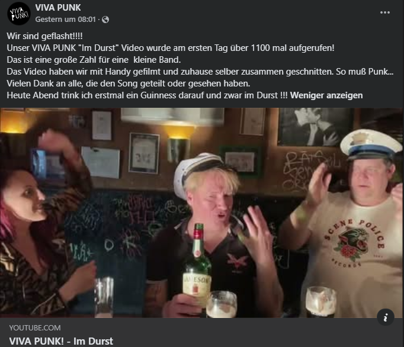

Review
VIVA PUNK! - Im Durst

Da freuen sich die Knalltüten von VIVA PUNK! sicher.
Nach zwei Tagen über 1000 Klicks auf dem Video zu „Im Durst“. Oder, wie man in Köln vermutlich sagt: Die Stammgäste aus der Kneipe Durst haben kurz alle ihre Handys rausgeholt. Mehrfach. Mit Nachbestellung.
Wer interessiert sich schon für VIVA PUNK!?
Ich.
:P
Persönlich versuche ich Köln ja eher zu meiden. Das ist nichts gegen Köln. Also doch, ein bisschen schon. Aber dieser kleine Werbesong für eine Kneipe könnte mich tatsächlich dazu bringen, da mal auf ein Guinness vorbeizuschauen. Und wenn ein Lied es schafft, dass ich freiwillig über Köln nachdenke, dann muss da irgendwas passiert sein.
„Im Durst“ hat schon etwas von einer Hymne.
Einer sehr kleinen Hymne.
Aber genau das passt. Das Ding will keine Welt retten, keine Szene erklären und vermutlich auch keine Musikhistoriker beschäftigen. Es macht einfach Laune. Kneipe, Krach, ein bisschen Quatsch, ein bisschen Mitsingen. Fertig. Manchmal reicht das. Manchmal ist das sogar mehr wert als die nächste große Ansage mit ernster Stirn und drei Ausrufezeichen zu viel.
Bei dem Song fragt man sich allerdings schon kurz, wo eigentlich der Unterschied zwischen EXTRABREIT und Punk liegt.
Egal.
Ich habe jetzt Durst.